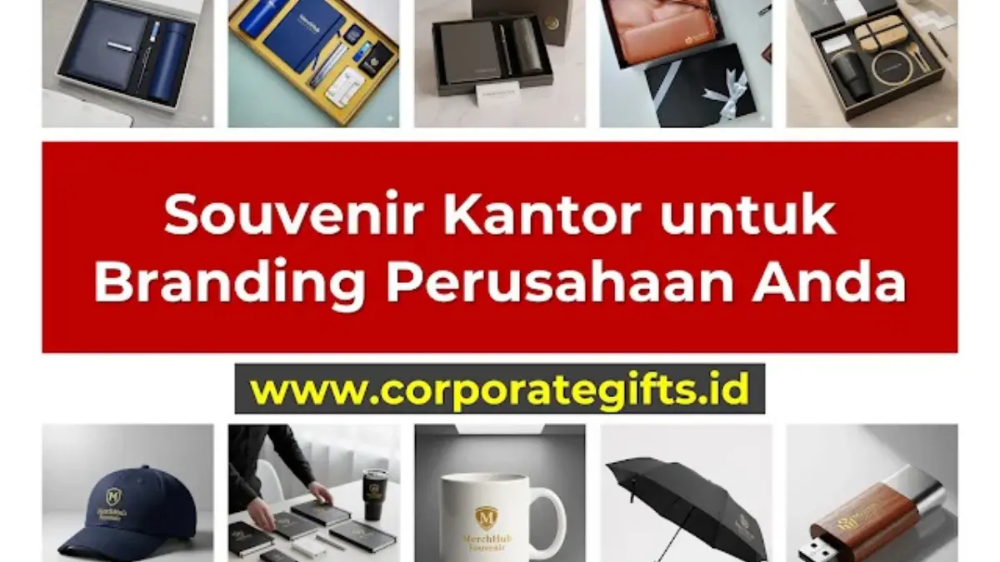

Corporate Gifts ID - Souvenir kantor adalah barang bermerek (branded merchandise) yang dirancang khusus oleh perusahaan untuk diberikan kepada karyawan, klien, rekanan bisnis, maupun peserta acara resmi. Lebih dari sekadar cinderamata seremonial, pemilihan souvenir kantor yang fungsional dan berkelas merupakan instrumen pemasaran taktis yang memperkuat brand awareness serta mempererat relasi profesional secara berkelanjutan.
Poin Kunci Panduan Souvenir Kantor:
- Duta Merek Berjalan: Produk fungsional yang dipakai harian bekerja sebagai media promosi visual permanen.
- Segmentasi Sasaran Tepat: Bedakan merchandise promosi massal, onboarding kit karyawan, dan gift set eksekutif klien VIP.
- Kualitas Fisik Unggul: Kualitas material menentukan persepsi audiens terhadap integritas dan profesionalitas perusahaan Anda.
- Efisiensi Anggaran: Rancang Minimum Order Quantity (MOQ) dan teknik cetak yang tepat untuk memaksimalkan return on investment (ROI).
Apa Itu Souvenir Kantor dan Mengapa Penting bagi Perusahaan?
Souvenir kantor, atau sering disebut sebagai corporate gift dan business merchandise, adalah produk berkualitas yang dipersonalisasi dengan identitas visual perusahaan (logo, tagline, warna korporat).
Ketika seorang eksekutif membawa tumbler custom logo ke ruang rapat atau menulis catatan pada agenda bersampul kulit eksklusif, produk tersebut menjadi perpanjangan tangan nyata dari identitas brand perusahaan Anda.
4 Manfaat Strategis Souvenir bagi Perusahaan
- Meningkatkan Brand Awareness dan Recall: Souvenir fungsional yang digunakan setiap hari di meja kerja memastikan nama perusahaan selalu berada di garis depan ingatan pengguna.
- Memperkuat Hubungan Kemitraan Klien: Memberikan hadiah eksklusif pada momen hari raya atau penutupan proyek menunjukkan penghargaan mendalam atas kemitraan bisnis.
- Meningkatkan Moral & Retensi Karyawan: Pembagian paket welcome kit pada masa onboarding terbukti menumbuhkan rasa bangga (sense of belonging) dan loyalitas talenta baru.
- Alat Pemasaran Berkelanjutan dengan ROI Tinggi: Berbeda dengan iklan digital berbayar yang hilang saat anggaran habis, souvenir fisik terus mempromosikan brand selama bertahun-tahun.

Ragam pilihan gift set kantor: USB flashdisk kartu, mug keramik, payung lipat otomatis, dan polo shirt berlogo resmi.
Jenis-Jenis Souvenir Kantor Berdasarkan Tujuannya
Setiap kelompok audiens membutuhkan pendekatan jenis cinderamata yang berbeda agar tujuan branding tercapai sempurna:
1. Souvenir untuk Klien dan Partner Bisnis (Corporate Gift VIP)
Fokus pada eksklusivitas, material mewah, dan kemasan berkelas. Pilihan utama meliputi pulpen metal grafir nama personal, gift box agenda kulit, plakat kristal, dan set tumbler termos vacuum premium.
2. Souvenir untuk Apresiasi Karyawan (Employee Appreciation & Onboarding)
Fokus pada kenyamanan, utilitas kerja harian, dan daya tahan. Contoh terbaik adalah backpack laptop tahan air, hoodie seragam tim, wireless mouse pad, dan desk organizer meja.
3. Souvenir untuk Seminar dan Konferensi (Seminar Kit)
Fokus pada kelengkapan materi acara dan kepraktisan. Paket terdiri dari tote bag kanvas, buku catatan spiral, lanyard ID card, pulpen, dan flashdisk kartu berisi materi presentasi.
4. Souvenir untuk Pameran Promosi Massal (Mass Merchandise)
Fokus pada biaya ekonomis dan jangkauan luas. Pilihan mencakup gantungan kunci akrilik, payung promosi, topi bordir, dan botol minum BPA-free berlogo.
Katalog Ide Souvenir Kantor Paling Populer di 2026
Kategori Gadget & Aksesoris Teknologi
- Power Bank Fast Charging: Sangat bermanfaat bagi profesional dengan mobilitas tinggi.
- USB Flashdisk Kartu Custom: Praktis disimpan dalam dompet dengan area print full-color luas.
- Bluetooth Speaker Portable: Hadiah apresiasi modern dengan output suara jernih.
- Wireless Charging Mouse Pad: Menggabungkan alas kerja halus dan stasiun pengisian daya smartphone.
Kategori Perlengkapan Kerja & Stationery Premium
- Agenda Hardcover Magnetik: Menampilkan kesan formal dan terorganisir.
- Pulpen Metal Laser Engraved: Hadiah abadi yang memberikan sentuhan tanda tangan berkelas.
- Card Holder Kulit Sintetis: Aksesoris elegan untuk menyimpan kartu nama bisnis.
Kategori Apparel & Perlengkapan Minum
- Polo Shirt & Jaket Bomber Bordir: Pakaian kerja rapi untuk event outing dan seragam divisi.
- Tumbler Stainless Steel SUS 304: Menjaga suhu minuman panas/dingin hingga 12 jam serta mendukung gaya hidup ramah lingkungan.
- Mug Keramik Decal Printing: Teman minum kopi harian di meja kerja kantor.
Tabel Rekomendasi Souvenir Kantor Berdasarkan Kategori & Penggunaan
Gunakan tabel komparasi berikut sebagai panduan praktis dalam menyusun rancangan pengadaan souvenir kantor:
| Kategori Produk | Rekomendasi Item | Segmen Audiens Utama | Teknik Cetak Terbaik |
|---|---|---|---|
| Stationery Premium | Buku Agenda Kulit & Pulpen Metal | Klien VIP, Direksi, Manajer | Deboss Logo & Laser Grafir |
| Drinkware Eksklusif | Tumbler Suhu LED Stainless SUS 304 | Karyawan Onboarding & Relasi Bisnis | Laser Engraving / UV Print |
| Tech Gadget | Power Bank Slim & Flashdisk Card | Peserta Konferensi & Tim IT/Sales | Full Color UV Flatbed Print |
| Apparel & Bags | Polo Shirt Lacoste & Tote Bag Kanvas | Gathering Karyawan & Event Publik | Bordir Komputer & Sablon Rubber |
| Eco-Friendly Gift | Set Sedotan Stainless & Bamboo Pen | Kampanye CSR & Komunitas Hijau | Sablon Water-Based & Grafir Kayu |
5 Tips Praktis Memilih Souvenir Kantor yang Tepat Sasaran
- Kenali Karakteristik Audiens Penerima: Sesuaikan preferensi item dengan demografi, jabatan, dan gaya hidup target penerima.
- Tetapkan Alokasi Anggaran Realistis: Buat batas budget per unit sedari awal untuk memudahkan seleksi produk tanpa mengorbankan kualitas akhir.
- Prioritaskan Nilai Guna dan Ketahanan: Souvenir yang awet akan digunakan berkali-kali dan memberikan eksposur merek yang jauh lebih tinggi.
- Harmonisasi dengan Citra dan Nilai Brand: Pastikan jenis souvenir mencerminkan kepribadian industri perusahaan Anda (inovatif, kokoh, atau ramah lingkungan).
- Konsultasikan Opsi Personalisasi Bersama Vendor Berpengalaman: Pastikan detail resolusi logo dan pemilihan teknik cetak sesuai dengan bidang permukaan produk.
Kesimpulan: Souvenir Kantor adalah Investasi Jangka Panjang
Memilih souvenir kantor yang tepat adalah perpaduan antara seni apresiasi dan ketepatan strategi bisnis. Cinderamata yang dirancang dengan matang bukan sekadar pos pengeluaran, melainkan investasi bernilai tinggi untuk memperkuat reputasi dan loyalitas kemitraan jangka panjang.
Konsultasikan kebutuhan merchandise dan corporate gift perusahaan Anda bersama CorporateGifts.ID untuk mendapatkan katalog pilihan produk terlengkap dan estimasi penawaran harga B2B paling kompetitif.